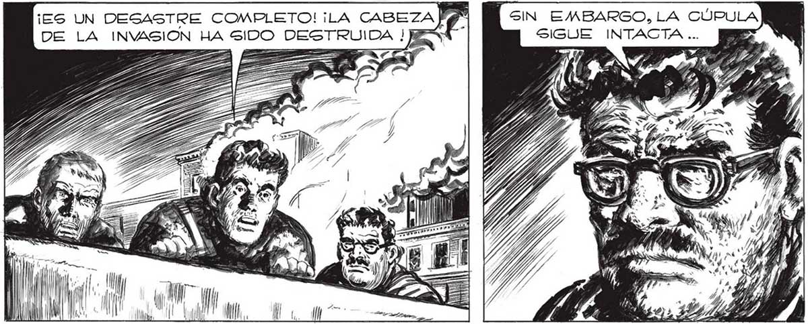
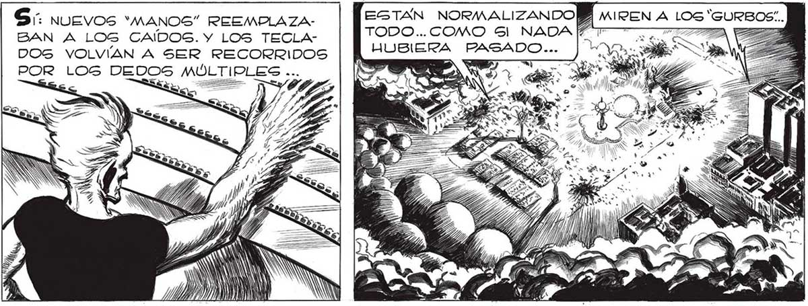

HASTA QUE NO LA DESTRUYAN E252% ¿y ESA ESFERA . 8 NO PODRÁ CANTARSE VICTORIA... 24M QUE SE ENCIENDEZ QS ¡ES UN DESASTRE COMPLETO! iLA CABEZA P Ñ SIN EMBARGO, LA CÚPULA DE LA INVASION HA SIDO DESTRUIDA ! o SIGUE INTACTA ... == LE A === ==> z PA € 4 $7 "7 WN a GB a = == == h N de as he $ A za E Es => 2 ? A a ZA 2 7 Ss SA a 5 da AN i 4 m 2 / ÉS h ss h o ) 03 Y ) h k 7 á am 7 2 S s ; e 7 SA Z / AO "Y y | =] mf <A A 1 glo 07 7 AGN ÉS Vr" t J l ¿QUÉ SERA? UNA LUZ ROJA, ' QUE PARECE GANGRE ... ZA IFA z ÁS E SS <E TIT COMO Gl NADA HUBIERA PAGADO. | d SOMBARDEO TERMINO. KW === e ro TE Í A E / y = ) alii UY) h 5 e == roza [quee pa y 7 == >< = —_——= —| dB —E N y : LL Po PU) ¡JN € LL Sí. nuevos “MANOS” REEMPLAZABAN A LOGS CAÍDOS. Y LOS TECLADOS VOLVÍAN A SER RECORRIDOS POR LOG DEDOS MULTIPLES ... E, E (0 hu. AS Es ] AGA CON >= => === 273

